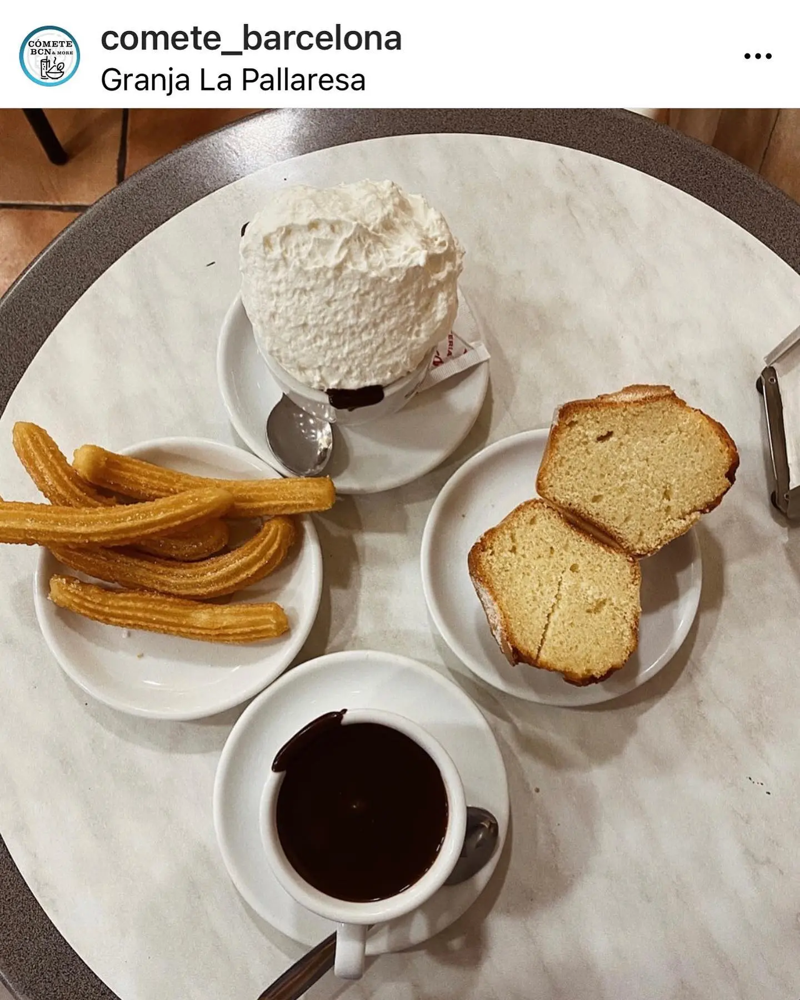
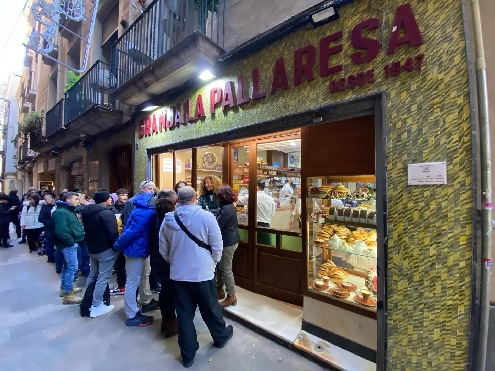

El diario de la casa
Escritos y memoria
Pequeñas historias de la calle, de nuestros productos y del día a día de una granja de ochenta años.

15 de mayo de 2026
El día que levantaron el pavimento
En 2005, mientras instalábamos un ascensor, aparecieron baldosas de 15 × 15 cm y adoquines del siglo XIX. Una arqueología bajo nuestros pies.

2 de mayo de 2026
De lechería a chocolatería
Antes de 1947 aquí se ordeñaban vacas. La leche se vendía por petricons. Hasta que Magí Cases trajo una chocolatera.

24 de abril de 2026
Las monjas de Pedralbes y nuestro mató
La receta del mató que servimos es la de las clarisas del monasterio de Pedralbes. Una crema blanca transmitida durante siglos.

10 de abril de 2026
Magí y Roser, 1947
Dos nombres que abrieron una puerta en la calle de Petritxol y montaron una chocolatera donde antes había vaquerías.

3 de abril de 2026
Petritxol, 1292
Un notario de Barcelona hace la primera mención de la calle. Aún no hay chocolate ni granjas, pero el topónimo ya existe.